算术运算和逻辑运算
融入STL条件
- 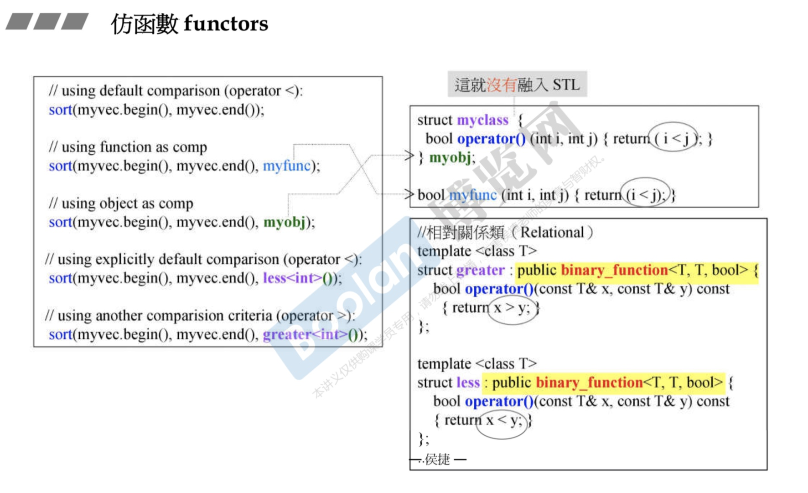
- 继承binary_function<T, T, bool>
- 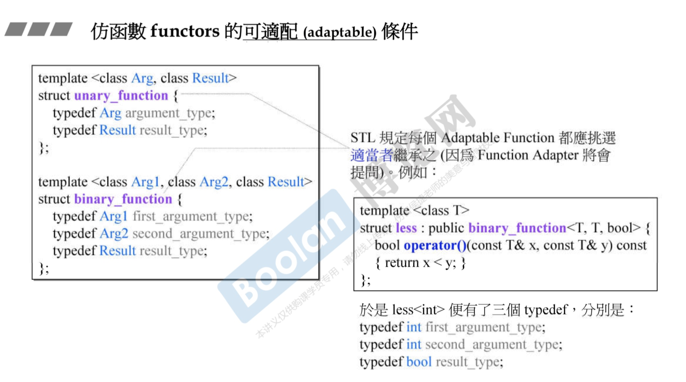
- unary_function 一个操作数 如果作为父类，有人继承的话，大小是零
- binary_function 两个操作数 1个字节
取反
- not1(bind2nd(less(), 40)));
- compose组合复杂的条件
Adapters
三种适配器
容器适配器
函数适配器
- 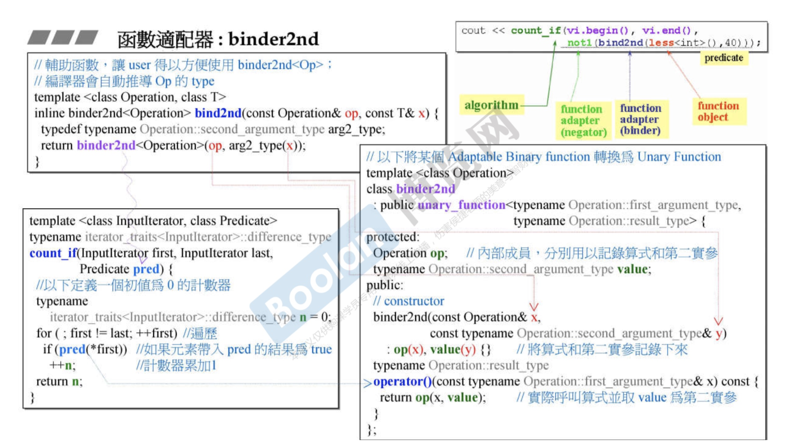
- less对应Operator op
- 40对应typename Operation::second argument_type value
- Operation进行类型检测
- 将参数存起来，以备后面使用
适配器回答三个问题
- 第一实参type是什么
- 第二实参type是什么
- 二者比较完后的type是什么
可适配条件
- binary_function
- unary_fucntion
新型适配器
结构图
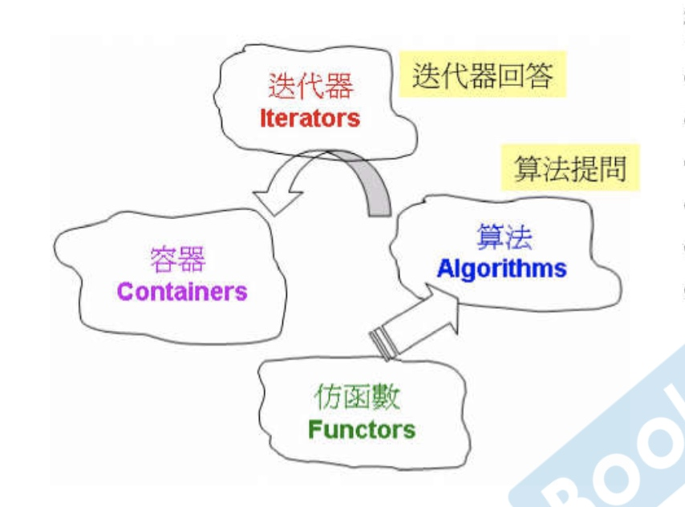
iterator
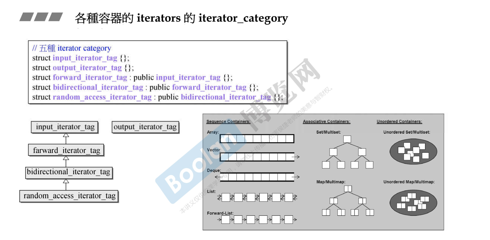
迭代器对算法影响

- 根据迭代器的分类来调用次函数
- 主函数配合辅助函数
- distance
- advance
copy

- 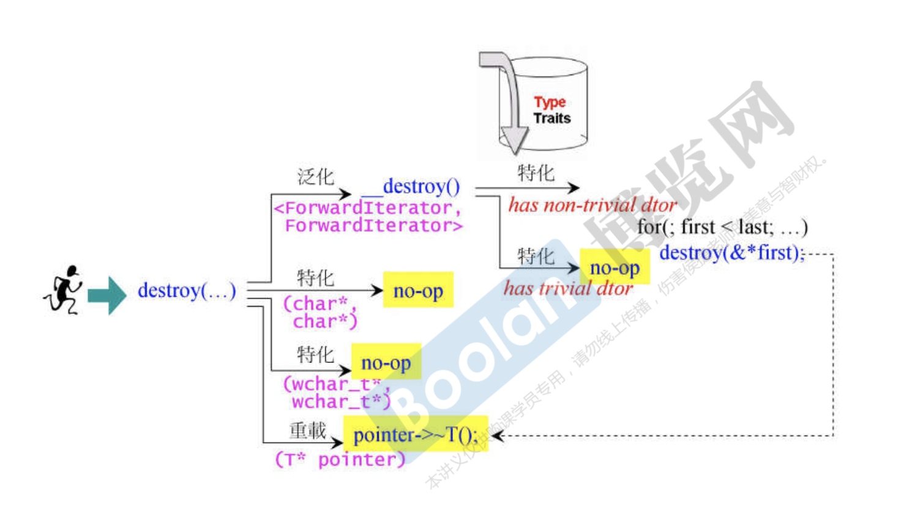
accumulate
replace&replace_if&replace
count&count_if
- 如果容器带count，用自带的
- 不带count用算法的
- 带count是一个字典结构，关联容器
rebegin&rend
binary_search
- 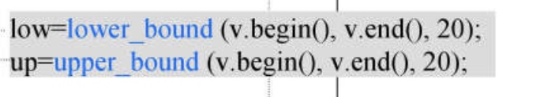
- lower_bound能够插入的最低点
- upper_bound能够插入的最高点
- 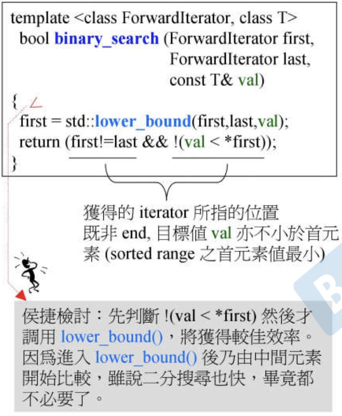
防函数
结构和内存
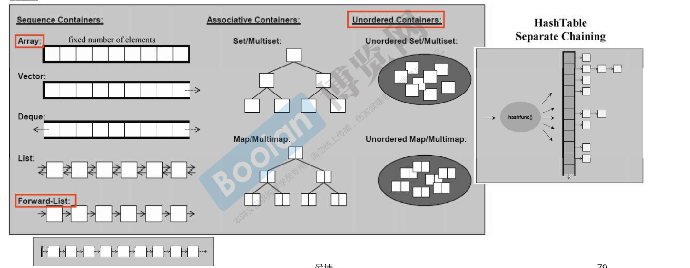
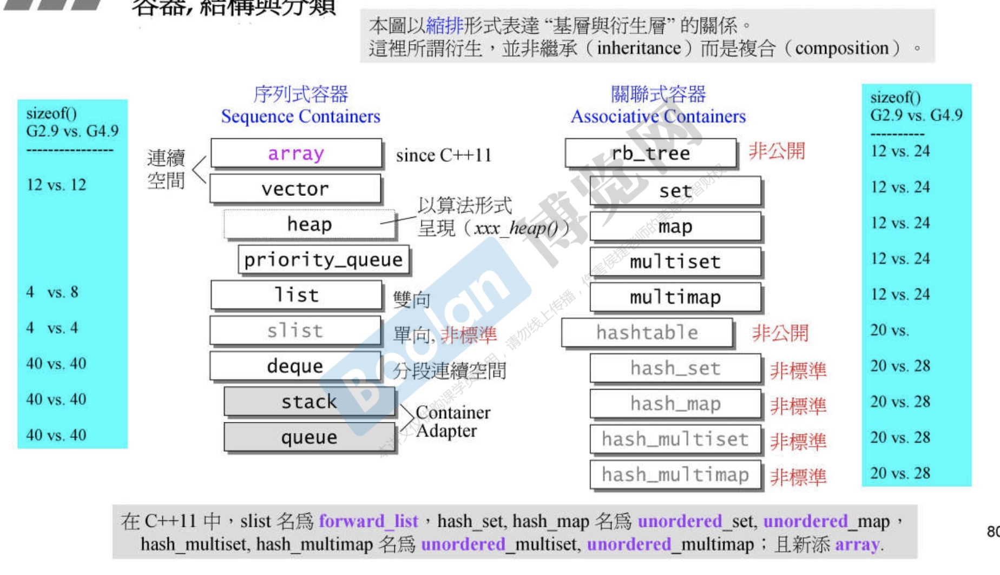
List
- 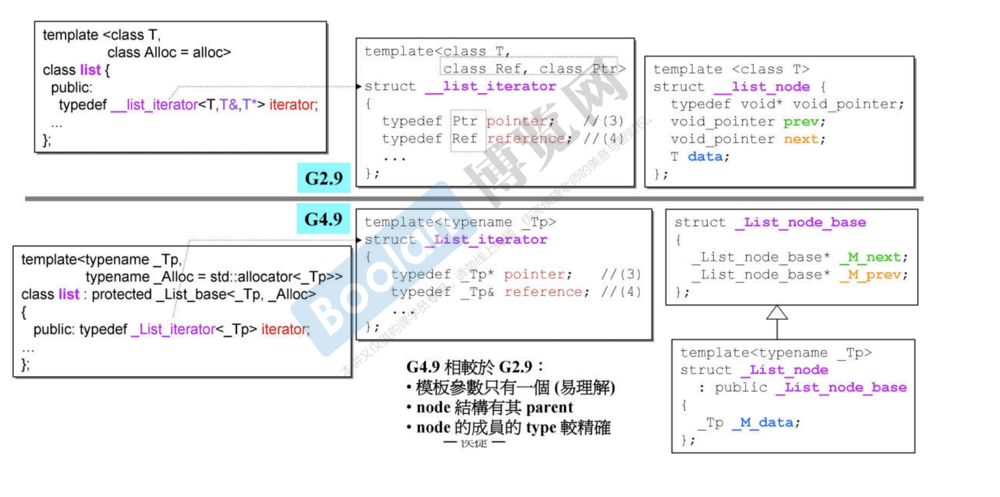
- 前闭后关
- _List_node_base<_Tp> 中有两个指针
- 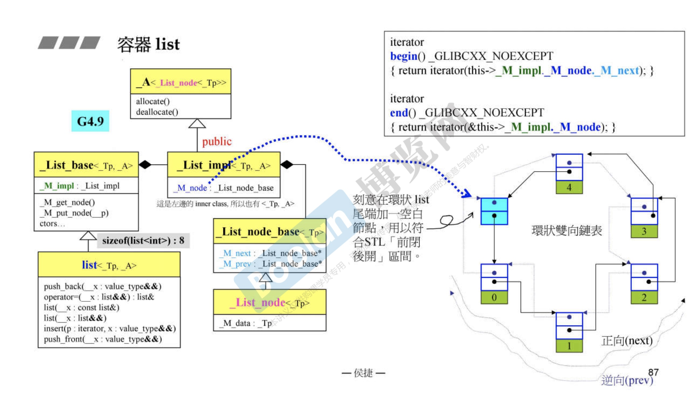
vector
array
deque
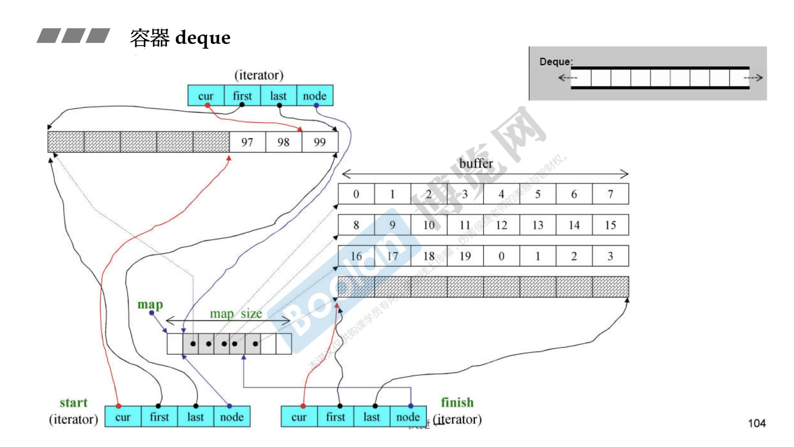
- 通过buffer串起来
- cur是当前位置，first,last是buffer的起始位置，node 控制iterator访问到边界之后，跳到下一个缓冲区
- map是中控制，数据结构是vector
- 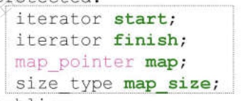
- dequeue和stack是封装的deque对象，并且调用部分成员函数
- 可以选择list和dequeue
- 不可以选择set或者map做底部支撑
容器
红黑树
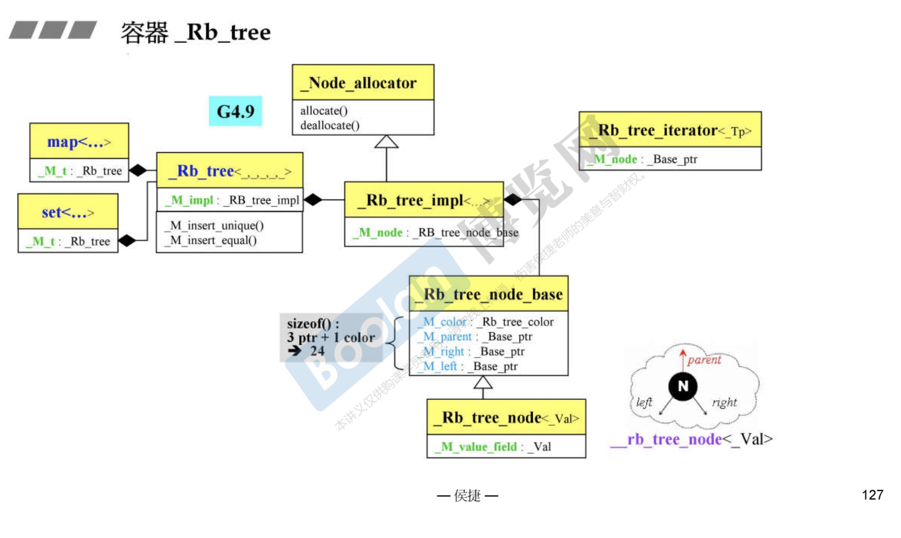
- handle and body
- set调用的是insert_unique()
- multiset调用的是insert_equal()
- set不能修改元素借用的是const_iterator
map
hash_table
STL使用allocator
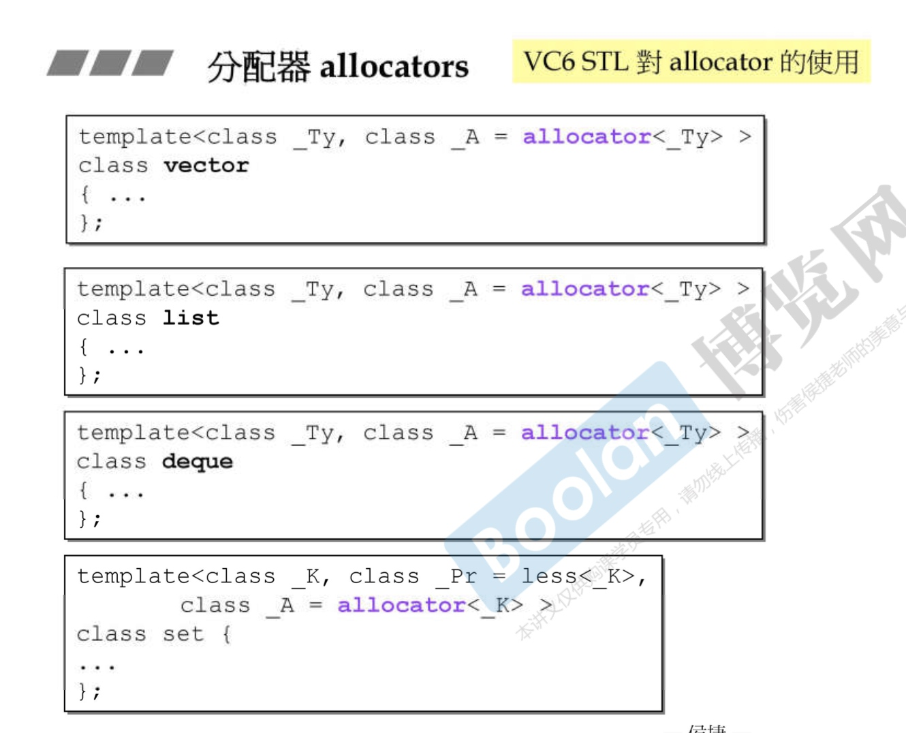
- GC实现
- 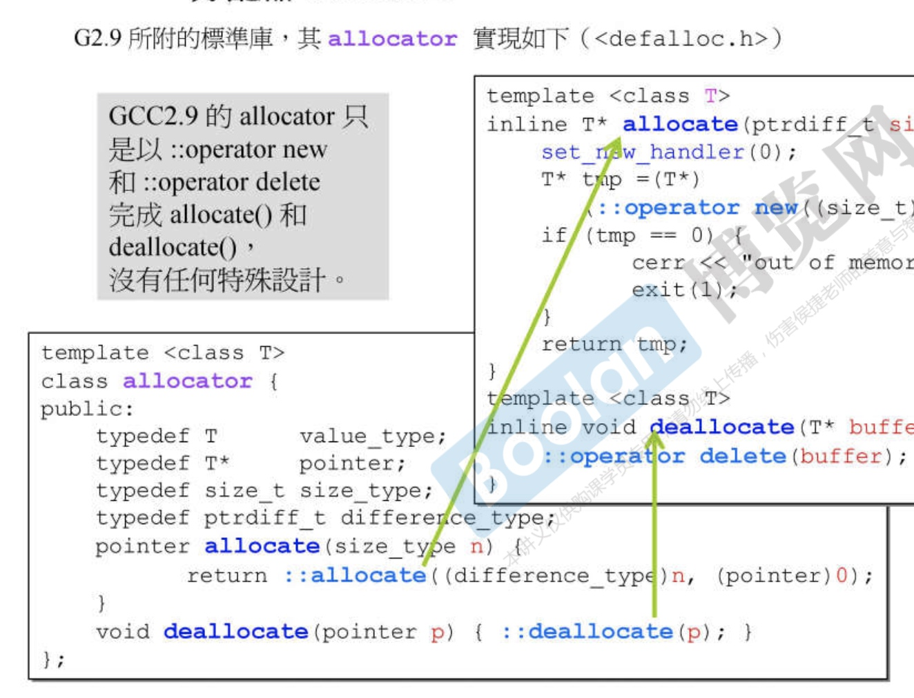
- 类似内存池
- 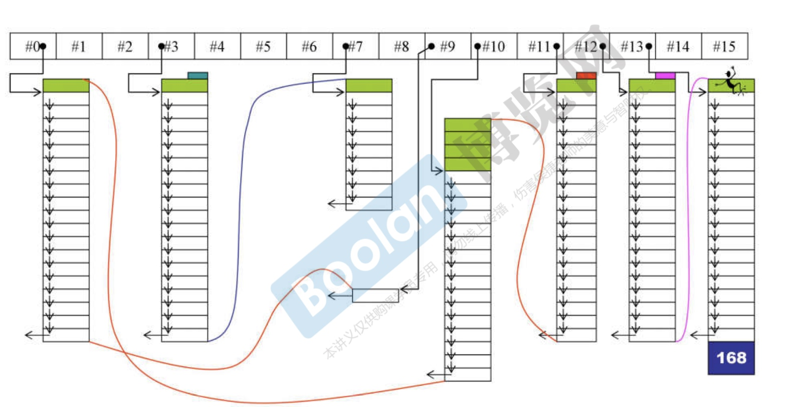
- G++4.9
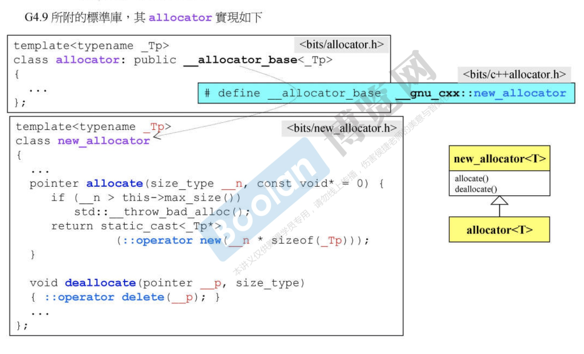